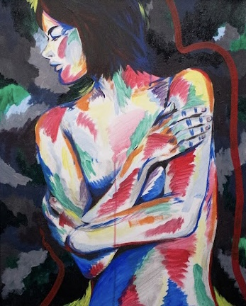
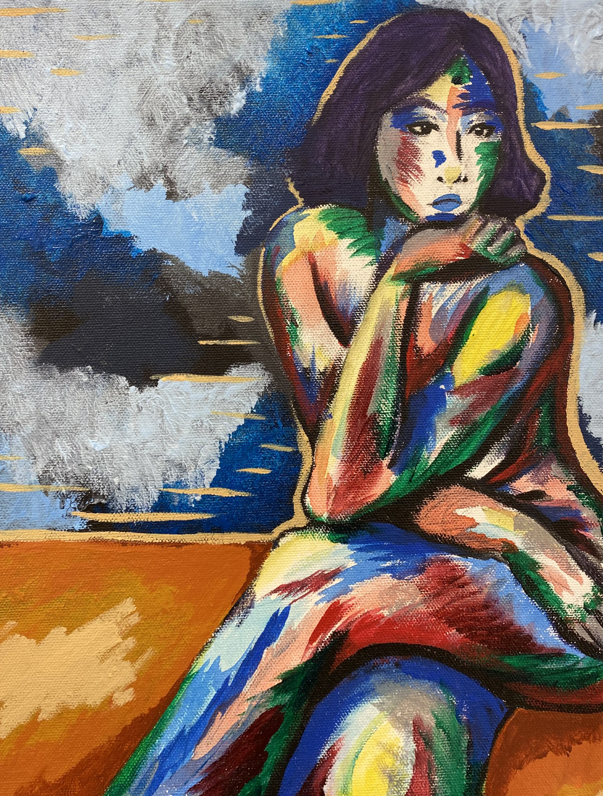
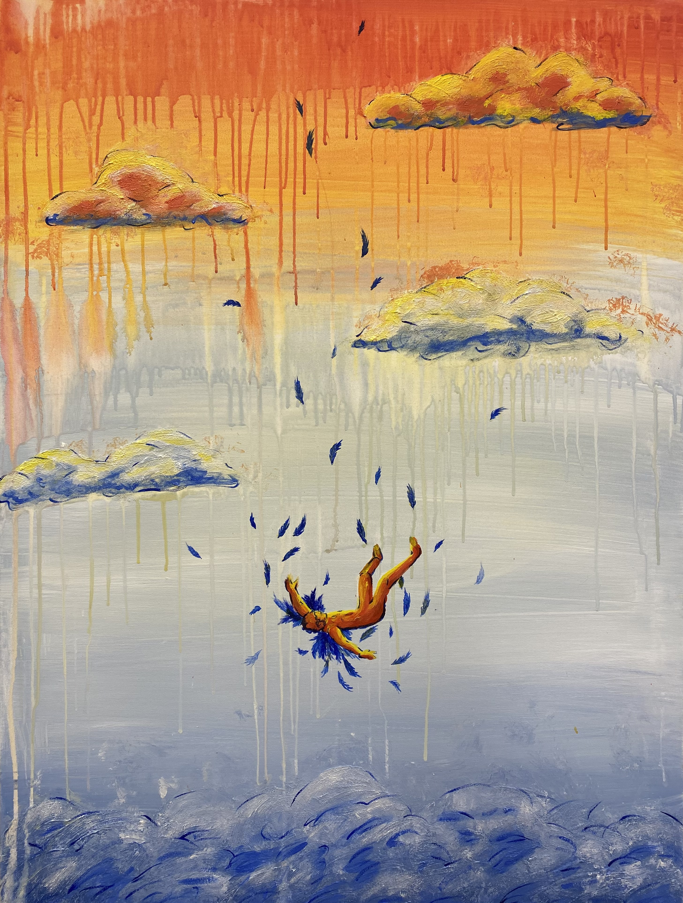
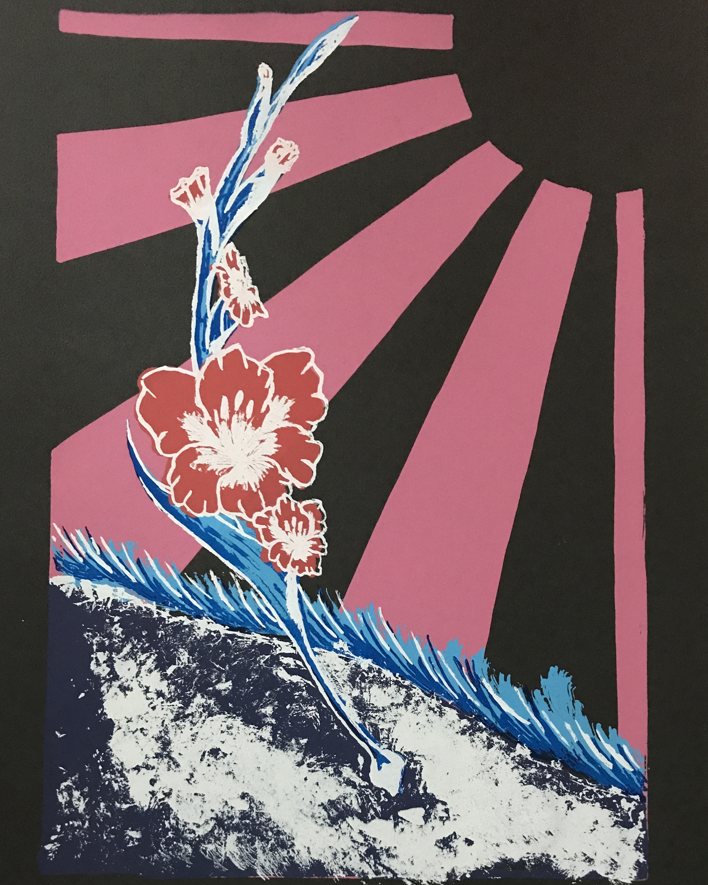
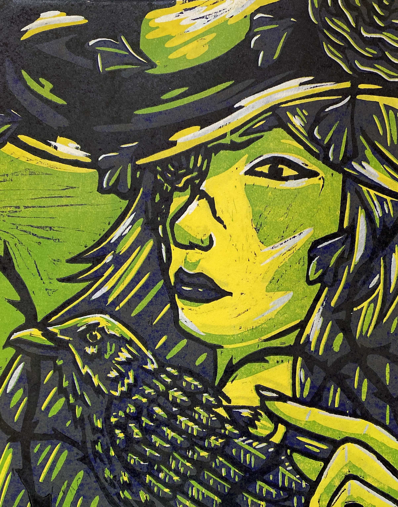
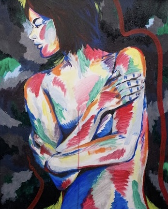
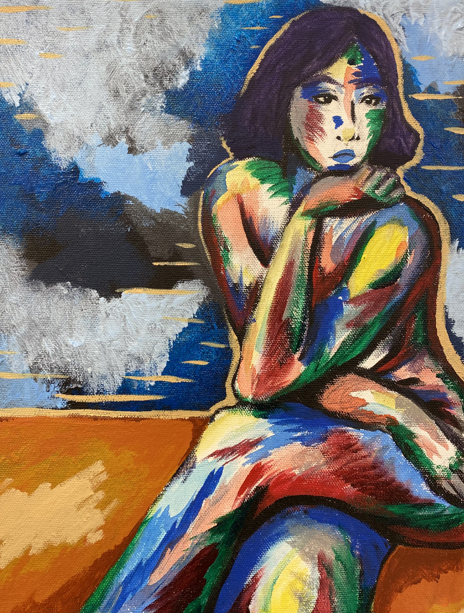
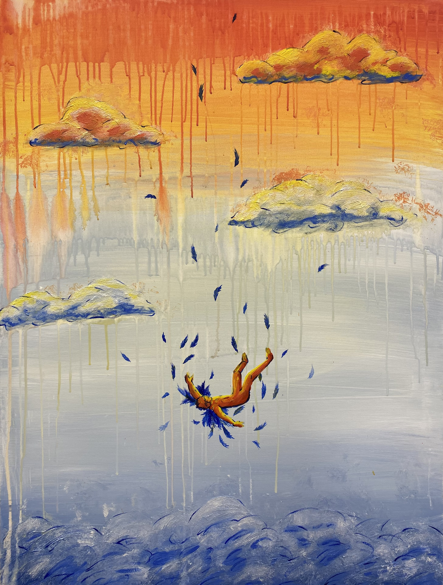
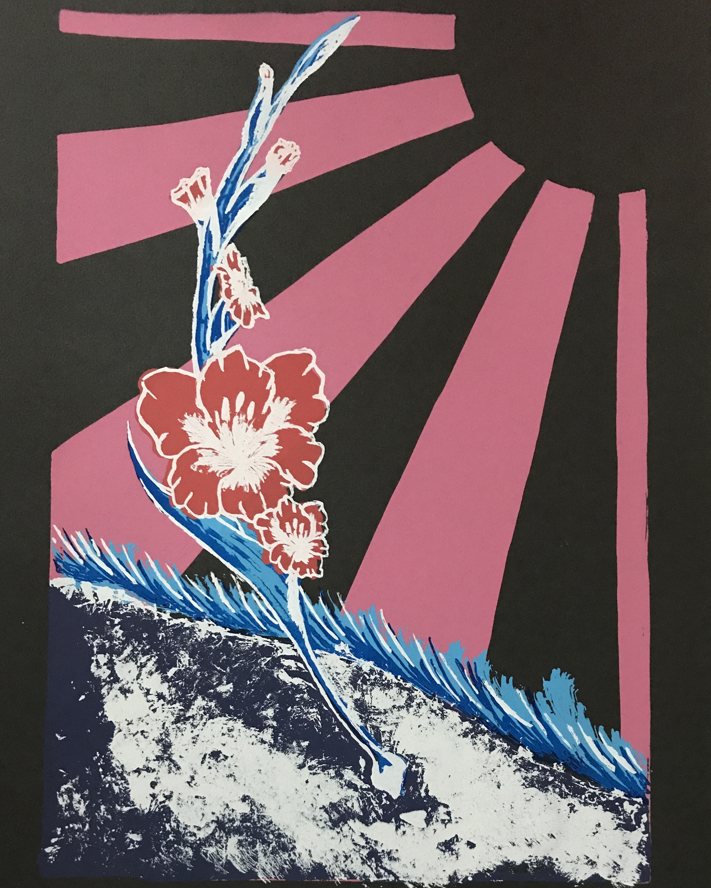
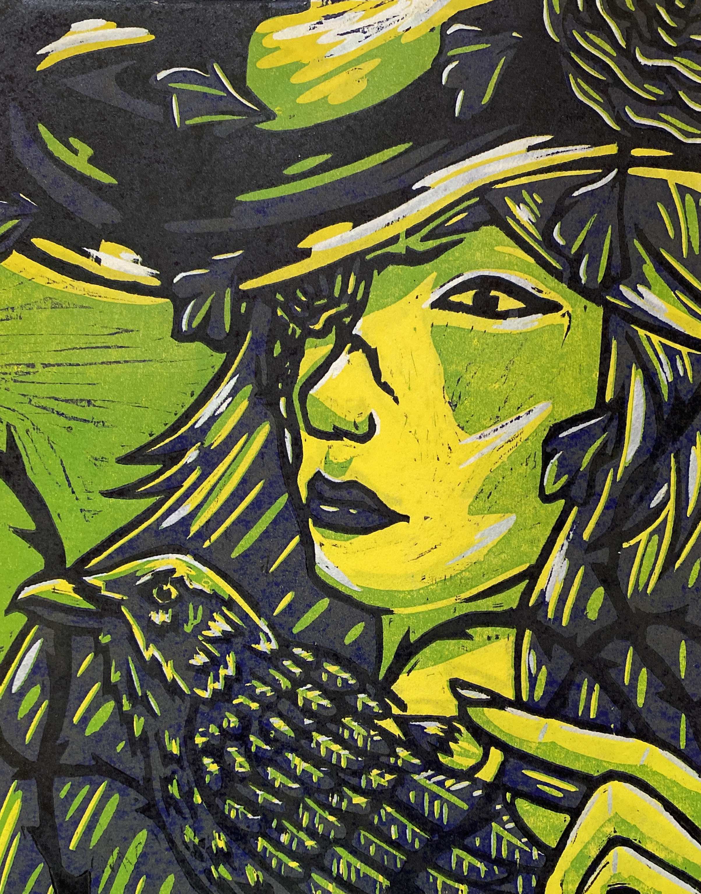

About Anna Selinger
Raised in central Iowa, Selinger grew up surrounded by urban and rural influences. Her father’s garden was a peaceful space where she could study and grow through her art. Its influences still appear in her current artwork where natural forms dominate. Through charcoal and acrylic paint she brings figures, plants, and music to life.
 








